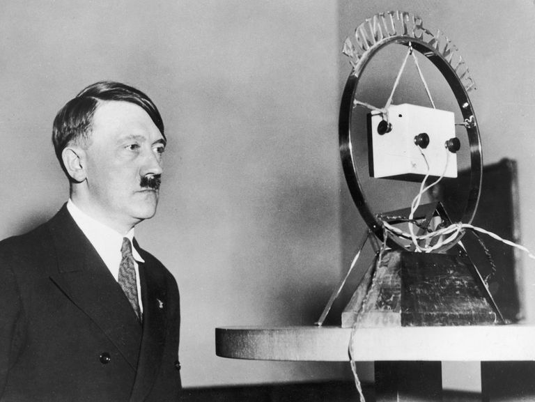

×
30 de enero de 1933: Adolf Hitler es nombrado Canciller

El 30 de enero de 1933, Adolf Hitler asumió la Cancillería de Alemania. En poco tiempo, el régimen nazi estableció un estado totalitario, eliminando libertades civiles y propagando un odio institucionalizado. Entre 1933 y 1945, se crearon numerosos campos de concentración donde millones de judíos y otros grupos perseguidos fueron encarcelados, torturados y asesinados.
Reflexión: Cuando un estado totalitario toma el control, nuestros derechos y libertades pueden desaparecer muy rápido. No hay que bajar la guardia ni dejar que el poder se concentre en unas pocas manos.